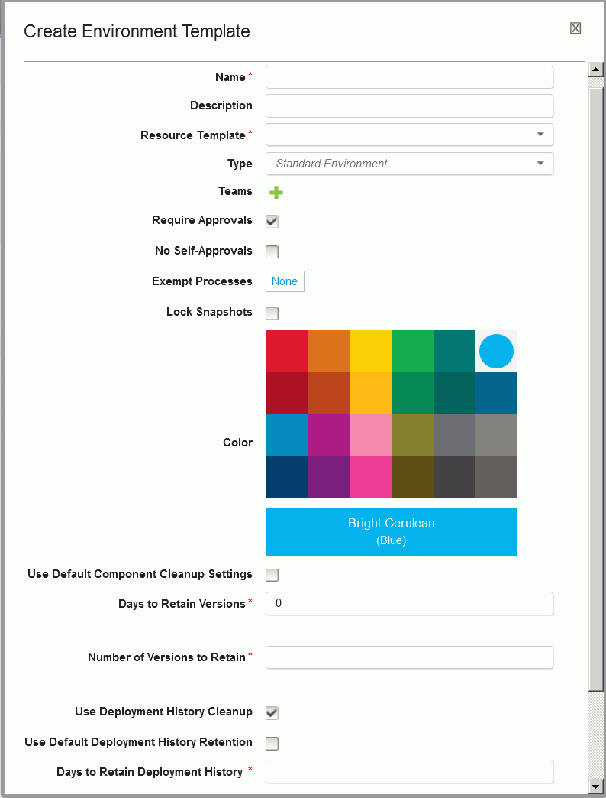

Creating environment templates
When you create an application template, you can define environment templates that model environments for the applications that you create by using the application template.
Ensure that you have a resource template that describes the resource tree for this environment in the application. Include both the component tags that the application templates uses and agent prototypes. See Resource templates.
-
Click Applications > Templates, select your application template, and then click Environment Templates > Create Environment Template. The Create Environment Template dialog box opens, as shown in the following figure:

-
Specify the environment name. If you create an environment from this template, the environment is assigned this name by default. The name is used as part of the deployment process and typically corresponds to the target environment.
- Provide the following information:
- Specify a description.
- In the Resource Template list, select the resource template to use for the environment.
- To set the environment security type, from the Type list, select the security type. The security type is automatically assigned to environments that you create when you create an application from a template. If you specify an environment template when you add an environment to an existing application, you must manually assign the security type.
- To grant teams access to the environment and set the security type for the environment template, click the plus sign icon by Teams, select values from the Team and Type lists, and click Add.
- To ensure that components cannot be deployed to the environment without first being approved, select the Require Approvals check box. If selected, HCL® UrbanCode™ Deploy enforces an approval process before the deployment can be deployed to the environment. Initial deployments are typically done in uncontrolled environments. After the deployment works as designed, you can configure an approval process as the application moves along the development pipeline. If you are setting up more than one environment, consider creating an approval process for at least one of them.
- To prohibit the user who makes the approval request from approving the same request, select No Self-Approvals.
- To exempt processes from approvals, click None by Exempt Processes, select the check boxes beside the application processes to exempt, and click OK.
- To prevent changes to snapshots in this environment after you deploy them, select the Lock Snapshots check box.
- If you selected the Lock Snapshots check box, from the Snapshot Lock Type list, select the lock type:
- To lock only component versions, select Only Component Versions.
- To lock snapshot configurations, select Only Configuration.
- To lock both component versions and configurations, select Component Versions and Configuration.
- To use the system default value, select System Default. The default value is determined by the Default Snapshot Lock Type field on the System Settings page. For information about system settings, see Server settings.
- Select a color to apply to the environment.
- To apply the cleanup values that are specified on the System Settings page, select the Use Default Artifact Cleanup Settings check box. If this check box is cleared, you must specify how long to keep snapshots and component versions. For more information about cleaning up component versions, see Cleaning up component versions. For more information about cleaning up snapshots, see Cleaning up snapshots.
- To use deployment history cleanup, select Use Deloyment History Retention. You can use the default settings that are specified on the Systems Settings page by clicking Use Default Deployment History Retention, or in Days to Retain Deployment History you can specify a number of days to retain deployment history records.
-
Click Save.
Note: If you create an environment with an environment template and then add component mappings to the resource template, the new component mappings are added to the environment. However, if you remove component mappings from the resource template, the component mappings are not removed from the environment.
The Configuration tab for the environment template is displayed. When you use the application template to create an application, you can create environments by using this environment template.
Parent topic: Application templates